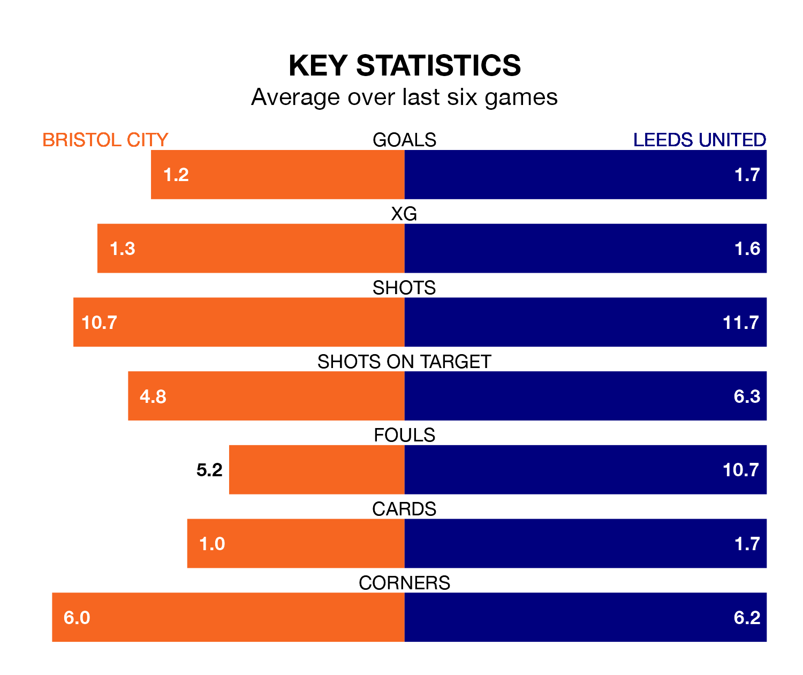

Leeds United are strong favourites to take all three points despite Bristol City's home advantage in Friday's late match at Ashton Gate.
*Betting Company* are offering odds of 1.67 on Leeds sealing the win, with the visitors sitting fourth in EFL Championship table.
City, who are 13th in the league and 19 points behind Leeds, are priced at 4.9 to win. A draw is set at 3.8.
With 51 goals in 29 games so far this season, Leeds are the league's joint-third-highest scorers with 1.8 goals per game. And they are conceding fewer than average, letting in 26 goals at a rate of 0.9 per game.
City, meanwhile, are below average scorers, with 1.1 goals per game, compared to a league average of 1.4. They have also conceded 1.1 goals per game.
With Illan Meslier between the sticks, United can rely on one of the league's safest pair of hands. He has kept 10 clean sheets in his 27 appearances this season, and only one other 'keeper – West Bromwich Albion's Alex Palmer – has been able to prevent the opposition scoring on more occasions in EFL Championship.
In the Robins' net, Max O’Leary has seven clean sheets in 29 games. He has conceded a goal every 87 minutes, 30% more often than the 114 minutes between goals for Meslier.
In the last 10 years, City and Leeds have played each other on 11 occasions. City won one of them, Leeds eight, and they drew twice.
On average, the Robins scored 0.7 goals and Leeds 1.7 in those matches.
Their last meeting was on October 7, when Leeds won 2-1 at home.
The hosts are in disappointing form in EFL Championship, with one win and three draws from their last six games.
With four wins and two losses over that period, the away team's form is much better – they have taken 12 points from 18, compared to City's six.
City's last match was on Tuesday, a 2-2 draw against Coventry City, with Nahki Wells and Robert Dickie getting the goals for the Robins.
Leeds beat Norwich City 1-0 last time out, on January 24, with Patrick Bamford on the scoresheet.
Updated: 10:40 (UTC), 01/02/24